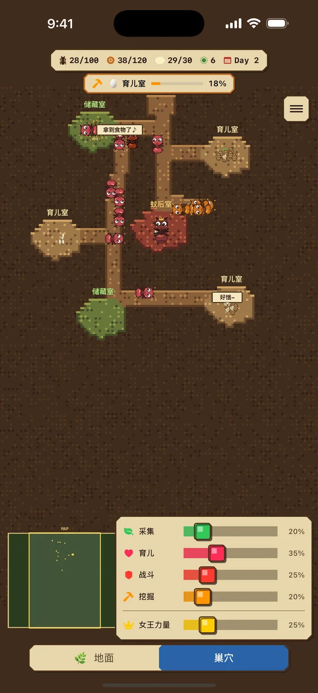
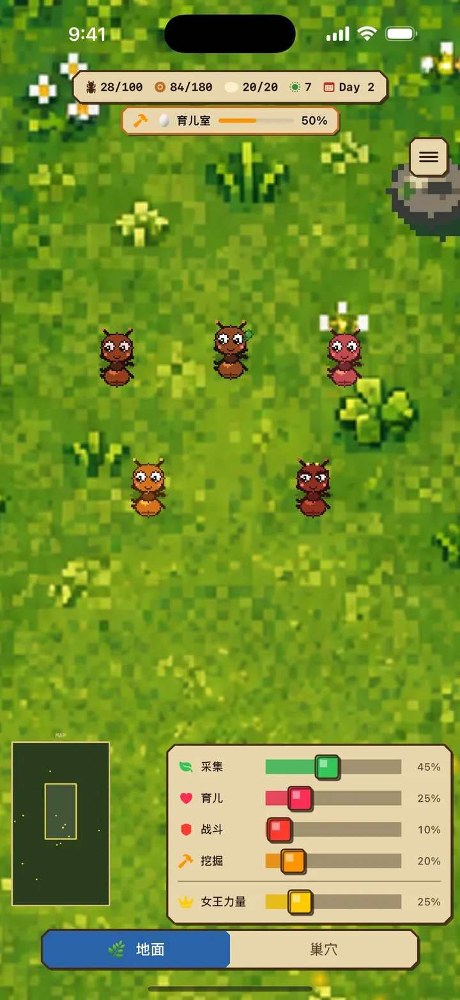
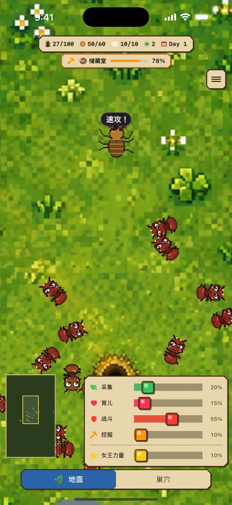
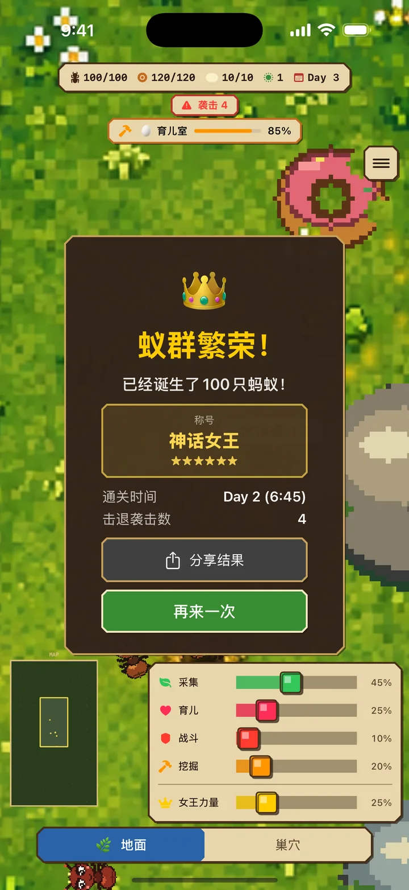

采集工（绿色）
在地面收集食物并搬回巢穴
蚂蚁日记 iOS
蚂蚁养成与蚁巢模拟 · 即时策略游戏
《蚂蚁日记》是一款培育蚂蚁殖民地的即时策略游戏。以蚁后为中心，调配工蚁的角色分工，抵御敌人的袭击，建立一个100只蚂蚁的繁荣殖民地吧。
免费 · 含广告 / 适用于 iPhone / iOS 17.0+


01 探索两个世界
分配工蚁进行挖掘，蚁巢会从现有通道自然延伸，并根据需要自动形成食物仓库或育幼室。
地面：采集食物、与敌人战斗的危险世界
巢穴：培育幼虫、挖掘房间扩展的安全之地
房间会提高食物和育幼容量。食物仓库装满后，采集工会等待，并在出现空位时自动恢复采集。
02 4种角色，制定你的战略
根据形势调整角色比例，是生存的关键。
在地面收集食物并搬回巢穴
喂养幼虫，培育新的工蚁
与敌人战斗，保卫殖民地
挖掘并扩建蚁巢 — 完成房间可提高食物和育幼容量
提高蚁后能量，产卵速度最高可达3倍。代价是蚁后饥饿速度最高达8倍，育幼工还要喂养蚁后、搬运蚁卵并照料幼虫。请随殖民地状况调整能量。

03 抵御敌人的袭击
随着时间推移，敌人的攻击会越来越猛烈。提前增加兵蚁做好准备吧。
根据形势调整角色比例，是生存的关键。
在 App Store 下载04 分数攻击挑战
达成100只蚂蚁的用时决定你获得的6种称号之一。挑战15分钟以内，成为「神话女王」！结果可生成随称号变化的卡片图片分享。
达到100只蚂蚁所用的时间即为你的分数。以最短时间为目标，反复挑战！

蚂蚁日记
守护蚁后，打造100只蚂蚁的殖民地！
在 App Store 下载免费 · 含广告 / 适用于 iPhone / iOS 17.0+